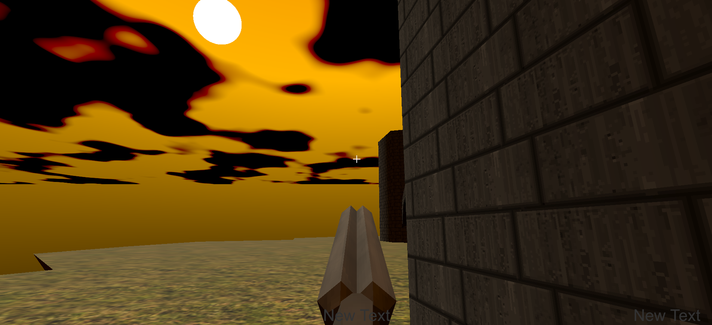
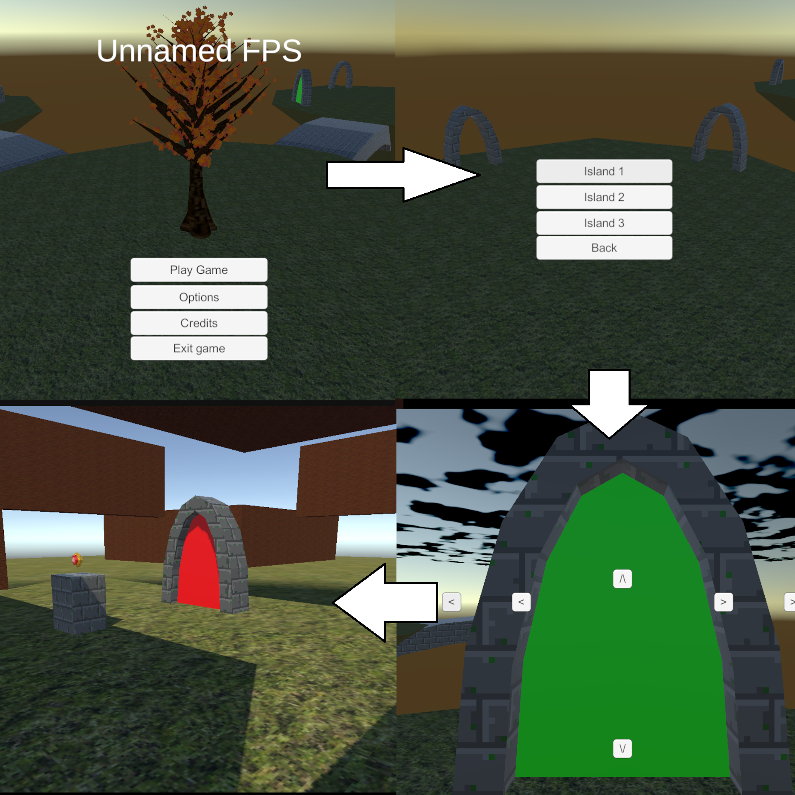
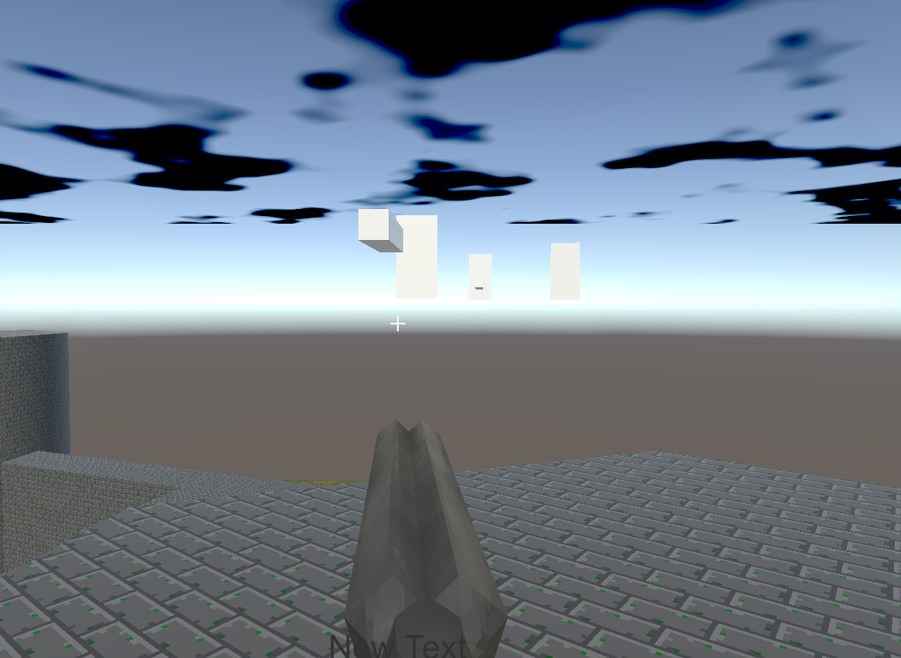
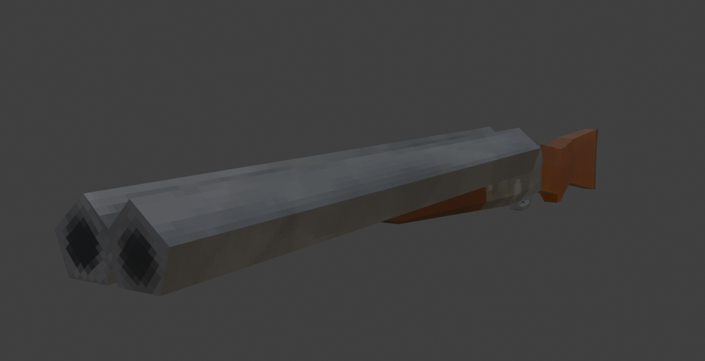

Beginning
After the last post I was a bit busy studying and playing Kerbal Space Program. Then out of nowhere on the 15th, I decided to work on the website again and managed to convert the whole thing into normal HTML and publish it on git. After that I was on a role, so out of boredom I refactored the main menu to make it less messy and add multiple islands + account for portal data. I thought I was done for the night, but I was bored so I decided to pop open a vanilla coke and get levels working, along with the levels ending with a jewel and a portal to exit. But before we go into detail, what am I even trying to achieve?
My general idea of the game is when you start it, you start up a Bootstrap script that creates global managers that handle input and load up a Game.config file that handle settings and in game progression. Once the bootstrap is complete it loads the main menu through a loading screen. On the main screen there are different buttons but the main one is the first, which leads to a list of islands that contains several levels on each island. Clicking on a island will bring up Portal select where you can pick the difficulty, portal and enter it. When you enter a portal of a selected difficulty(green, blue, red) You play the level that portal leads too, Once all the fighting is over the portal comes back along with a stone stand with a jewel. Back out the main menu, for each different colored jewels you collect, more portals get unlocked. Rinse and repeat
First thing's first, How do we handle data? For saving progress I made a struct that store the jewels collected and a Level name that's associated with it. Aside from differentiating portals, it can also be used to load the levels itself. Outside of saving outside the application, there's also data that needs to be carried between scenes while the game is running. Mainly ints on what island, portal and difficulty. On the main menu side I refactored the code to include islands, along with rewritting the level select code to make it more clean. I thought I got enough done and quit for the night. Then I realized I wasn't in the mood for video games, I couldn't resist opening a vanilla coke and continue programming. I added a function to loading screens to load strings, Made a little animation to move into a portal, load the level and exit back to the main menu in a little portal zoom out animation. Next few days I decided to add a bit more polish to the Levels itself, making a Level verison of the portal with a script that lowers on level loads, then rises when the level ends. Same with a stand that rises when a level ends and gives you a jewel

So with the foundation of the game in place, it's time to work on the combat. I've already made a little level for endless mode, just a small island with a castle, and a slightly raised wall that you can roll under

After working on Warped Horizons, i've learn quite alot on pixel art and 3D modeling so I decided to work on a shotgun model. Polish can come later but feedback and gamefeel is extremely important in combat. So, to me, it's always important to have some sorta of graphics and sound. Besides i'm basically starting the game all over so might as well add guns according to the needs of combat
After I added the shotgun, I added code and begin working on a enemy spawner, just a simple timer and random picks of the 4 default enemies, swordsman, gernades man, wizard, flying crossbow. First test I didn't realize there was a error in the spawning code that made it only pick swordsman and flying enemies. I realized just how little feedback there is when shooting, It's impossible to tell if you hit a enemy or not. After adding a simple gunshot hole, I realized the range of the shotgun was really low. I also fixed the spawning issue. After the first test with the wizard I realized a really cool accidental mechnic. The roll I added was meant to stop fall damage kinda like mirror's edge, but sense I refactored the old code to also lower the collish to jankishly go under walls. I could actually dodge homing fireballs by bunnyhoping and dodgerolling under a wall
Not long after this, I got sick for the first time in years. So I didn't do much of anything except watch videos, I did work on a Sten like gun model for fun